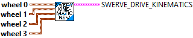
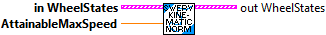
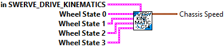
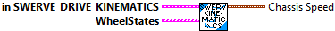
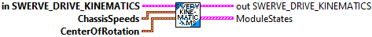
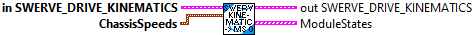
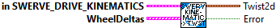
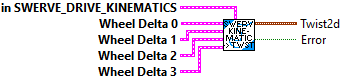

Constructs a swerve drive kinematics object. This takes in a variable number of wheel locations as Translation2ds. The order in which you pass in the wheel locations is the same order that you will recieve the module states when performing inverse kinematics. It is also expected that you pass in the module states in the same order when calling the forward kinematics methods. This subVI is customized for 4 wheel modules.
This is a helper class that converts a chassis velocity (dx, dy, and dtheta components) into individual module states (speed and angle).
The inverse kinematics (converting from a desired chassis velocity to individual module states) uses the relative locations of the modules with respect to the center of rotation. The center of rotation for inverse kinematics is also variable. This means that you can set your set your center of rotation in a corner of the robot to perform special evasion manuevers.
Forward kinematics (converting an array of module states into the overall chassis motion) is performs the exact opposite of what inverse kinematics does. Since this is an overdetermined system (more equations than variables), we use a least-squares approximation.
The inverse kinematics: [moduleStates] = [moduleLocations][chassisSpeeds] We take the Moore-Penrose pseudoinverse of [moduleLocations] and then multiply by [moduleStates] to get our chassis speeds.
Forward kinematics is also used for odometry -- determining the position of the robot on the field using encoders and a gyro.
Parameters:
- wheel 0 - Translation data structures indicating the location of a wheel relative to the physical center of the robot.
- wheel 1 - Translation data structures indicating the location of a wheel relative to the physical center of the robot. (Meters)
- wheel 2 - Translation data structures indicating the location of a wheel relative to the physical center of the robot. (Meters)
- wheel 3 - Translation data structures indicating the location of a wheel relative to the physical center of the robot. (Meters)
Returns:
- SwerveDriveKinematics - The initialized data structure
Constructs a swerve drive kinematics object. This takes in a variable number of wheel locations as Translation2ds. The order in which you pass in the wheel locations is the same order that you will recieve the module states when performing inverse kinematics. It is also expected that you pass in the module states in the same order when calling the forward kinematics methods.
This is a helper class that converts a chassis velocity (dx, dy, and dtheta components) into individual module states (speed and angle).
The inverse kinematics (converting from a desired chassis velocity to individual module states) uses the relative locations of the modules with respect to the center of rotation. The center of rotation for inverse kinematics is also variable. This means that you can set your set your center of rotation in a corner of the robot to perform special evasion manuevers.
Forward kinematics (converting an array of module states into the overall chassis motion) is performs the exact opposite of what inverse kinematics does. Since this is an overdetermined system (more equations than variables), we use a least-squares approximation.
The inverse kinematics: [moduleStates] = [moduleLocations][chassisSpeeds] We take the Moore-Penrose pseudoinverse of [moduleLocations] and then multiply by [moduleStates] to get our chassis speeds.
Forward kinematics is also used for odometry -- determining the position of the robot on the field using encoders and a gyro.
Parameters:
- wheels - Array of Translation data structures indicating the locations of the wheels relative to the physical center of the robot. (Meters)
Returns:
- SwerveDriveKinematics - The initialized data structure

Normalizes the wheel speeds using some max attainable speed. Sometimes, after inverse kinematics, the requested speed from a/several modules may be above the max attainable speed for the driving motor on that module. To fix this issue, one can "normalize" all the wheel speeds to make sure that all requested module speeds are below the absolute threshold, while maintaining the ratio of speeds between modules.
Parameters:
- moduleStates - Array of module states.
- attainableMaxSpeed - The absolute max speed that a module can reach. (Meters/Sec)
Returns:
- out Wheel States -- Array of normalzied Wheel States

Performs forward kinematics to return the resulting chassis state from the given module states. This method is often used for odometry -- determining the robot's position on the field using data from the real-world speed and angle of each module on the robot. This subVI is customized for 4 individual wheel states.
Parameters:
- in Swerve Drive Kinematics - Swerve drive kinematics data structure
- wheelState 0 - The state of a module (as a SwerveModuleState type) as measured from respective encoders and gyros. The order of the swerve module states should be same as passed into the constructor of this class.
- wheelState 1 - Another wheel state
- wheelState 2 - Another wheel state
- wheelState 3 - Another wheel state
Returns:
- The resulting chassis speed.

Performs forward kinematics to return the resulting chassis state from the given module states. This method is often used for odometry -- determining the robot's position on the field using data from the real-world speed and angle of each module on the robot.
Parameters:
- in Swerve Drive Kinematics - Swerve drive kinematics data structure
- wheelStates - The state of the modules (as a SwerveModuleState type) as measured from respective encoders and gyros. The order of the swerve module states should be same as passed into the constructor of this class.
Returns:
- The resulting chassis speed.

Performs inverse kinematics to return the module states from a desired chassis velocity. This method is often used to convert joystick values into module speeds and angles.
This function also supports variable centers of rotation. During normal operations, the center of rotation is usually the same as the physical center of the robot; therefore, the argument is defaulted to that use case. However, if you wish to change the center of rotation for evasive manuevers, vision alignment, or for any other use case, you can do so.
In the case that the desired chassis speeds are zero (i.e. the robot will be stationary), the previously calculated module angle will be maintained.
Parameters:
- chassisSpeeds -- The desired chassis speed.
- centerOfRotation -- The center of rotation. For example, if you set the center of rotation at one corner of the robot and provide a chassis speed that only has a dtheta component, the robot will rotate around that corner. (Meters)
Returns:
- ModuleStates - An array of data structures containing the module states. Use caution because these module states are not normalized. Sometimes, a user input may cause one of the module speeds to go above the attainable max velocity. Use the {@link #normalizeWheelSpeeds(SwerveModuleState[], double) normalizeWheelSpeeds} function to rectify this issue.

Performs inverse kinematics to return the module states from a desired chassis velocity. This method is often used to convert joystick values into module speeds and angles.
This uses the robot center as the center of rotation. During normal operations, the center of rotation is usually the same as the physical center of the robot; therefore, the argument is defaulted to that use case. However, if you wish to change the center of rotation for evasive manuevers, vision alignment, or for any other use case, you can do so.
Parameters:
- chassisSpeeds -- The desired chassis speed.
Returns:
- ModuleStates - An array of data structures containing the module states. Use caution because these module states are not normalized. Sometimes, a user input may cause one of the module speeds to go above the attainable max velocity. Use the {@link #normalizeWheelSpeeds(SwerveModuleState[], double) normalizeWheelSpeeds} function to rectify this issue.

Performs forward kinematics to return the resulting chassis state from the given module states. This method is often used for odometry -- determining the robot's position on the field using data from the real-world speed and angle of each module on the robot.
Parameters:
- in Swerve Drive Kinematics - Swerve drive kinematics data structure
- wheelDeltas - An array of the latest change in position of the modules (as a SwerveModulePosition type) as measured from respective encoders and gyros. The order of the swerve module states should be same as passed into the constructor of this class.
Returns:
- The resulting twist2d.

Performs forward kinematics to return the resulting chassis state from the given module states. This method is often used for odometry -- determining the robot's position on the field using data from the real-world speed and angle of each module on the robot.
Parameters:
- in Swerve Drive Kinematics - Swerve drive kinematics data structure
- wheelDelta 0 - The latest change in position of the modules (as a SwerveModulePosition type) as measured from respective encoders and gyros. The order of the swerve module states should be same as passed into the constructor of this class.
- wheelDelta 1 - Another wheel position
- wheelDelta 2 - Another wheel position
- wheelDelta 3 - Another wheel position
Returns:
- The resulting twist2d.